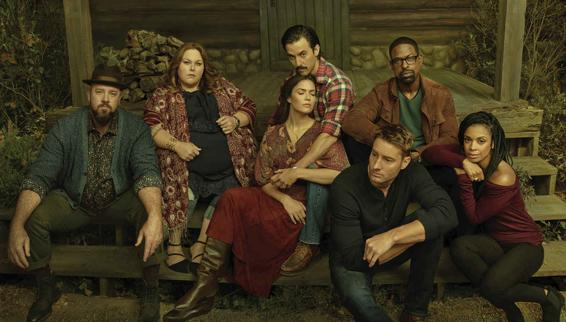

Basic Concepts Learn how sociologists define and describe families.
Theoretical and Historical Perspectives on Families Review the development of sociological thinking about families. Learn how families have changed over the last 500 years, and the social and economic factors underlying these changes.
Research on Families Today Learn about patterns of dating, cohabitation, marriage, same-sex unions, childbearing, divorce, remarriage, and child-free families. Analyze how these patterns today differ from those of other periods. Understand race, ethnic, and social class differences in contemporary families.
Unanswered Questions Understand the ways that cohabitation differs from marriage, how parents’ sexual orientation affects their children, and the linkage between marital status and happiness.
If you answered b (50 percent), you would be correct. But if you answered c (70 percent), you would also be correct. How is that possible? This is a bit of a trick question because it depends on precisely how you think about families. Roughly half of all children currently live in households with a mother and father who are in their first marriage. But then another 7 percent of children live with two parents who are cohabiting but not legally married to each other. And another 15 percent of children live with a mother and father who married each other after their first marriages ended. If you add these numbers together, then fully 68 percent live with two parents, although these two-parent families are a highly diverse group (Federal Interagency Forum on Child and Family Statistics, 2019).
Most scholars agree that there is no such thing as a “typical” family in the United States today. As popular television shows such as Modern Family, Blackish, and This is Us reveal, no one family form or structure accounts for the majority of U.S. households today. Families today include people who live alone, single parents with children, stepfamilies, grandparents who share a home with their grandchildren, same-sex couples both with and without children, cohabiters both with and without children, divorced spouses who share a home because they can’t afford two separate homes, and married spouses who live miles apart due to their jobs. The notion that the “typical” household includes a breadwinner dad, a stay-at-home mom, and two perfect children is even more dated. Just 14 percent of children under 18 live in a household with a breadwinner father and stay-at-home mother in their first marriage (Livingston, 2015). Families today also are more dynamic than ever, meaning that marriages end in divorce, divorced people remarry or form new cohabiting unions, and single parents may find a new partner. These partnership transitions mean that children may live with multiple different parents or parent-like figures during the first 18 years of life; these changes bring challenges (as well as benefits) that shape child well-being (Fomby and Cherlin, 2007).
Census data can tell us what the “statistical” norm is, or those behaviors that are objectively more or less common in the United States today. Sociologists, by contrast, help shed light on what the “cultural” norm is—and why. Are certain family forms considered “best” for the health and well-being of American society? Or do all family forms confer their own distinctive benefits? And, if so, why do so many Americans still hold on to the belief that some family forms are superior to others, often couching their arguments in terms of “what’s best for the children”?
Sociologists David Popenoe and Judith Stacey have been engaged in a decades-long debate over this very question. Popenoe (1993, 1996) argues that families have changed for the worse since 1960. Over the past six or seven decades, divorce, nonmarital births, and cohabitation rates have increased, while marriage and marital fertility rates have decreased. He claims these trends underlie social problems such as child poverty, adolescent pregnancy, substance abuse, and juvenile crime. Increasing rates of divorce and nonmarital births throughout the latter half of the twentieth century created millions of female-headed households and have removed men from the child-rearing process—a situation that is harmful to children, Popenoe argues.
Stacey (1998, 2011) counters that the “traditional” American family of the 1950s—praised by Popenoe, conservative politicians, conservative media sources like Fox News, and online communities like OneMillionMoms as the panacea for all social problems—is a dated and oppressive institution. According to Stacey, the “modern family” with “breadwinner father and child-rearing mother” perpetuated the “segregation of the sexes by extracting men from, and consigning White married women to, an increasingly privatized domestic domain.” The modern family has been replaced by the “postmodern family”—single mothers, blended families, cohabiting couples, same-sex unions, dual-career families, and families with a breadwinning mother and stay-at-home dad. The postmodern family is well suited to meet the challenges of the current economy and is an appropriate setting for raising children, who need capable, loving caretakers—regardless of their gender, marital status, employment status, or sexual orientation, argues Stacey.
Popenoe agrees that children need capable, loving caretakers, yet he maintains that “two parents—a father and a mother—are better for a child than one parent.” He claims that biological fathers make “distinctive, irreplaceable contributions” to their children’s welfare. Fathers offer a strong male role model to sons, act as disciplinarian for trouble-prone children, provide daughters with a male perspective on heterosexual relationships, and, through their unique play styles, teach their children about teamwork, competition, independence, self-fulfillment, self-control, and regulation of emotions. Mothers, on the other hand, teach their children about nurturance and communion, the feeling of being connected to others. Both needs can be met only through the gender-differentiated parenting of a mother and father, Popenoe argues.
Stacey retorts that the postmodern family is better suited to the postmodern economy, in which employment has shifted from unionized heavy industries to nonunionized clerical, service, and new industrial and high-tech sectors. The loss of union-protected jobs means that many men no longer earn enough to support a wife and children. And, during the recessionary years of the early twenty-first century, men who suffered long-term unemployment often relied on their wives to fully support their families. At the same time, demand for clerical and service labor, escalating consumption standards, increases in women’s educational attainment, and high and steady divorce rates have led most women, including mothers of young children, to work for pay outside the home.
Stacey also disagrees with media rhetoric and claims by conservatives, such as Popenoe, who elevate the married, two-parent family as the “ideal” family form. Rather than condemning contemporary family forms, Stacey reasons, family sociologists and policy makers should develop strategies to mitigate the harmful effects of family instability on children. She suggests restructuring work schedules and benefit policies to accommodate familial responsibilities; redistributing work opportunities to reduce unemployment rates; enacting comparable worth standards of pay equity to enable women as well as men to earn a family wage; providing universal health care, prenatal and child care, and sex education; and rectifying the economic inequities of divorce (Biblarz and Stacey, 2010).
Claiming that “marriage must be re-established as a strong social institution,” Popenoe argues that employers should stop relocating married couples with children and should provide more generous parental leave. He also supports a two-tiered system of divorce law. Marriages without minor children would be relatively easy to dissolve, but marriages with young children would be dissolvable only by mutual agreement or on grounds involving a wrong by one party against the other. The proposal has been met with skepticism among feminist scholars, who address the costs for children and adults alike of reinstating grounds of fault for divorce.
Television shows such as The Fosters and This is Us, advertising campaigns, and major retailers are embracing more inclusive images and ideas of families.
Where does the “truth” lie—with Stacey, with Popenoe, or somewhere in between? In this chapter, we will learn what families actually look like in the twenty-first century, how families have changed through history, the wide range of forms that families take, and some of the challenges family members face today. We will see that the postmodern family is clearly the statistical norm in the United States in the twenty-first century. Although cultural norms tend to lag slightly behind statistical realities, in recent years, the number of television shows, films, and advertising campaigns upholding a broad and inclusive image of “family” has flourished.
For instance, an ad for Google Home features gay dads Ross and Alex asking the device for information on local traffic so that they can decide which parent should drive their children to school (Rook, 2017), while a TV spot for Honey Maid features a young boy whose parents have divorced and each remarried. When Isaac talks about his blended family, he casually mentions that his stepdad has black hair and his dad has brown hair, but he doesn’t see other differences. Both men are his “dads.” Starting nearly a decade ago, department stores like Target and JC Penney began actively marketing their wedding registries to same-sex couples, who could identify as “bride,” “groom,” or “partner” as they registered for wedding gifts (Maxwell, 2012). These cultural images and practices have helped to contribute to more expansive attitudes about what constitutes a “normal American family.” In this chapter we will show how common such patterns are and discuss the implications of shifting families for the well-being of children and their parents.